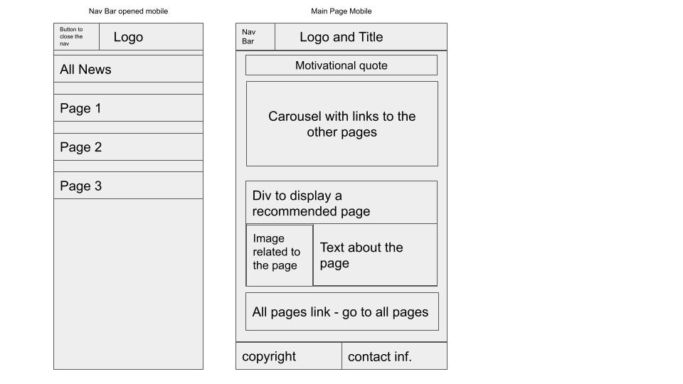
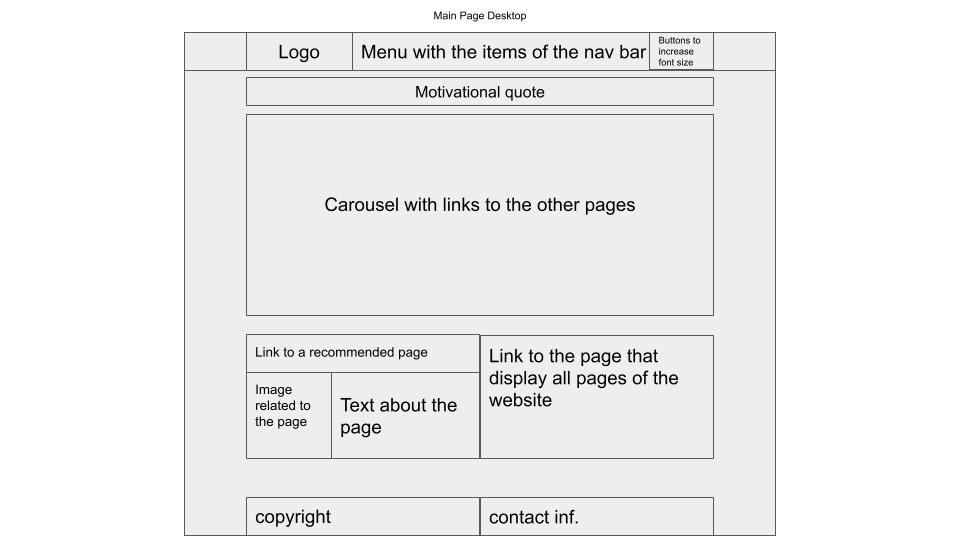
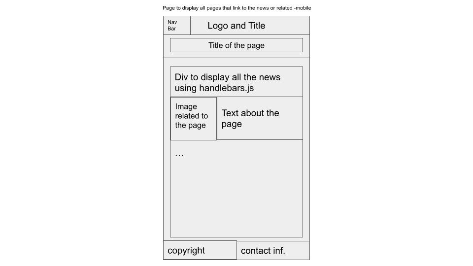
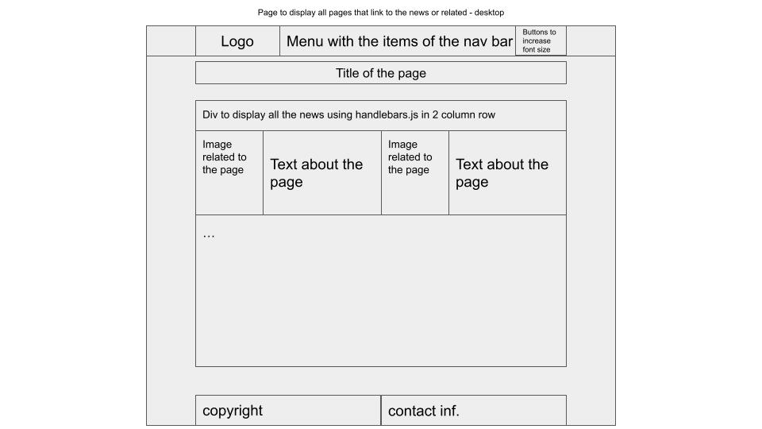
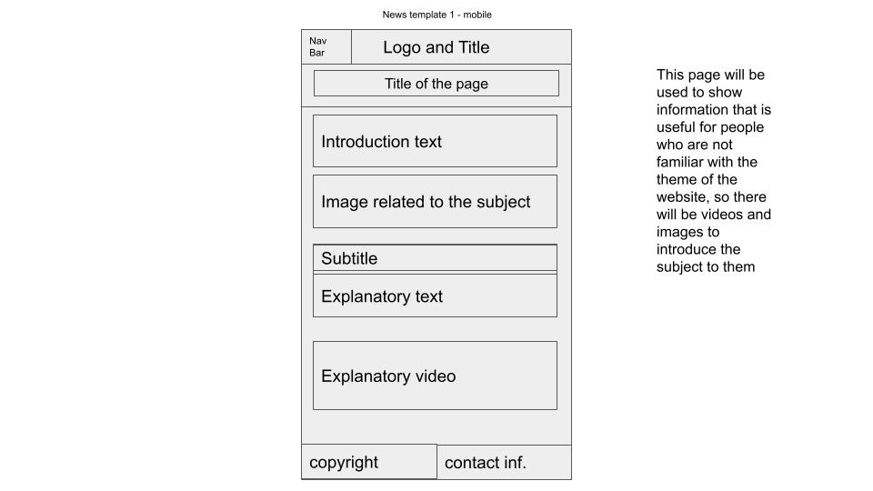
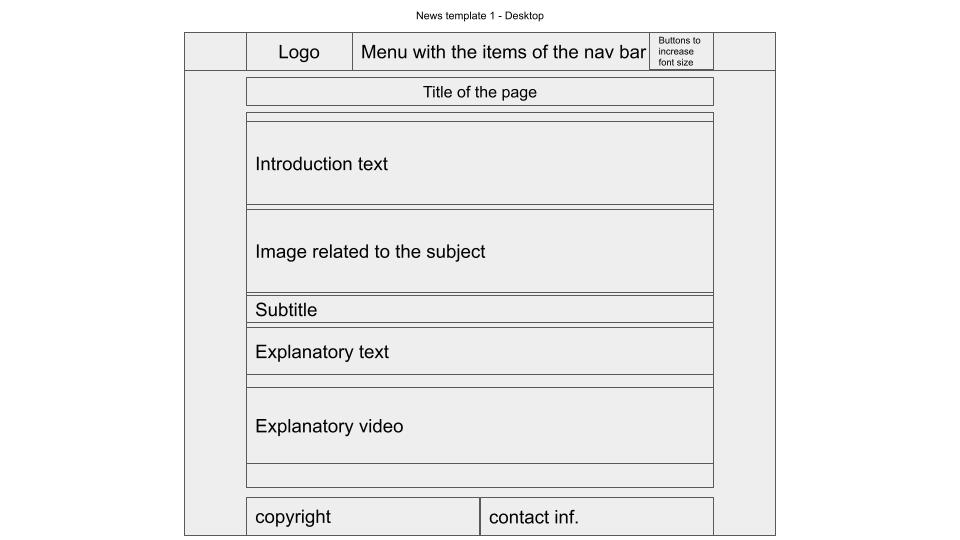
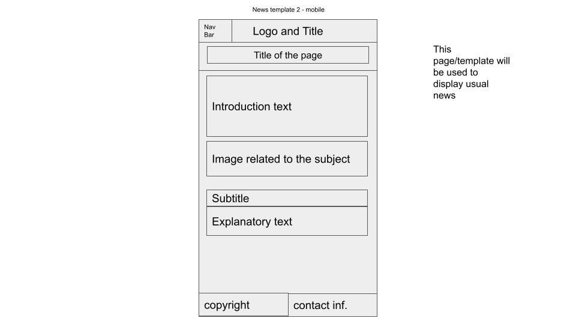
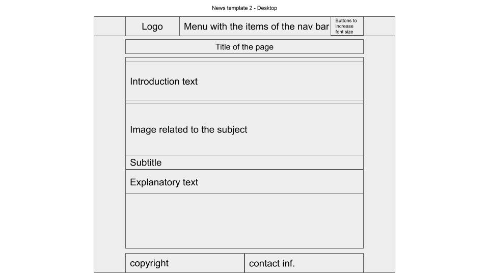

João Vitor Caneppele
The site I built has the function of storing news and articles about the digital game League of Legends which I have played a lot since I was in middle school. I wanted the site to be used by people who have already played the game and know the basic things about it, but also by those who don’t know anything about the game and its environment. With that in mind, the site starts with a New to League article in the home to help people who don’t know how the game works. In addition to this, the site complements the article discussed before with another two, the first showing a little bit about the e-sports environment around the game and the second one explaining more advanced things such as how the ranking system works, a subject that is too advanced to be in the New to League article. I figured out that this order of content tells a great story to anyone accessing the site because they can have a good picture of the basic systems of the game, but also some advanced as well, and, in addition to it, they can get a little taste of the game’s competitive environment which is an essential thing to League’s community as most people say, it is one of the reasons the game is still live for so long.
In terms of planning, I scheduled myself to do first the wireframes so I had a beginning point when I started to write the HTML, I also did some research on what I could add to my website, in the research, for example, I could explore more how I would build a carousel in the home page. After that, I wrote the HTML the way I wanted when drawing the wireframes, In this phase I made some adjustments to the wireframes that I had not considered while drawing them. When I was satisfied with the HTML structure, I started to style it and put everything in place with CSS. During this last phase, I also started to code the Javascript part of the website. In the end, I just did some bug fixes and everything was done.
I structured the site the way I think a news website would work. Therefore, there is an “All News” page responsible for displaying all the news the site has. I thought that would be too repetitive and not really user-friendly to create all the HTML by hand to display all the news, so I created a display template and a JavaScripy list of objects with properties such as title, description, and link so that whenever I needed to add a new page, it was just necessary to add a new element to the list and handlebars would, ironically, handle the HTML rendering. Besides this “All News” page, the news for themselves is just like anyone would expect, there are text, images, and videos that help the user to understand the information on the page.
The first thing that inspired me to build this website was my friends and relatives who always ask me how the game I play so much works. I noticed that I needed to explain the same thing to each of them and, sometimes, more than once because most of them couldn’t understand it well. This inspired me to create a place where these people can have a good picture of the game with relevant videos and images to help them understand the content easily.
The second thing that was an important point in the creation of this website was a news website that I access a lot here in my home country, it’s called Mais Esports. The idea of building a page to display all the news came actually from this website because, on their home page, the news appears dynamically as you scroll down the page. I couldn’t code this dynamic functionality, actually it would not be practical as well because there are just three news on my website, but I was able to build the page in a way that the HTML to display the news is generated automatically by handlebars.js, so there is no need to copy and paste the HTML to insert a news in the page.
Last, but not least, the thing that inspired me was the lectures from this Web Development module, This can be seen in the navigation bar, in the way the content is displayed on the page, and also in the accessibility features such as the font size controllers. The navigation bar, for example, looks and acts just like the one shown on the South London Online Reading Group website. I took a large inspiration from the features taught in the module, but I also made small changes in how things were made, so the CSS I used to style and give functionality to the navigation bar is different from the one used in the website shown in the module.
The main point of accessibility I tried to focus on was to make the text easy to read because as I had in mind that I wanted my website to be colored, it may cause some conflict with the accessibility design pattern as some things might not have a lot of contrast between others. However, I could overtake that by using a darker yellow than I was planning to use, this way I could make the text white and still create a good contrast between the background and the text the user will read.
The next accessibility feature I considered for my website, maybe the most obvious one, was to use the “alt” property for all media tags in the website as well as labels to buttons such as the checkbox in the navigation bar. I think these basic things are really important in terms of accessibility because this way people with visual disabilities can comprehend the images displayed as they will have an alternative text explaining what is in them.
The third way my website considers accessibility is in relation to the font size. As I said in the last topic of this report, inspired by the lectures I added some clickable tags on the right side of the navigation bar so the user can control the font size of the website in the way they think is comfortable for them to read. There are three sizes of font, default, medium, and large. I did some tests to make sure everything was displayed well even when the font was set too large and the screen size was reduced, however, I might have missed some elements that will not be well displayed in some cases, such as text inside divs for example.
The first and key attribute of usability I considered in my website was the information to be easily accessible, It can be seen mainly on the main page, as all the pages are, in some, way accessible by it. Therefore, the user can access the news by clicking on the navigation bar, using the carousel, or even by scrolling down and clicking on the recommended page tile or the All News tile. Considering this, I found the website a lot easier to use and to find the information in it.
The second thing I considered was for the website to have no bugs. The most challenging part of this was that I had to ensure the website would work well without crashing and displaying things in the right way in the mobile version and in the desktop version. I am happy that in my tests everything worked perfectly without errors and without weird element behaviors in both versions of the website.
The last usability element of the website is for it to be relevant and engaging to the user. I did this by displaying relevant information in the news and not making it too exhausting to read, in the end, I followed the rule of less is more, so I searched for quality content instead of writing anything I found on the internet.
The thing I had to search more and learn better was in terms of CSS styling, specifically in positioning the elements the way I wanted. So it was common during the process of styling for me to go to w3schools.com to search for some CSS property that could help me put the elements inside a div the way I wanted. By doing this I learned a lot about the different types of display, such as flex, block, and grid, and also the ways it’s possible to display divs in columns, on my website, for example, I managed that by using the float property in the “All News” page and the column-count in the main page for the “Recommended” link and the “All News” link.
The carousel on the main page was another thing I needed to learn how to do it. At the beginning of the project I had in mind using Bootstrap to work this out, but I ended up doing it in pure JS and CSS after doing some research about how carousels work. To end this topic, the last thing I had to learn the most was handlebars. I wanted to somehow display links to each of the news with some image and text related to it on a page but without the need to copy and paste the HTML to each of them. To manage that, I watched again the lectures about handlebars and also read some of its documentation on its official website. Fortunately, I was able to make it all work the way I wanted.
I think I was really successful in making my website easy to use and access, so every page can be accessed easily anywhere on the website. Besides that, the website can be accessed using a mobile device with a small screen or a desktop device with a wide screen. Another aspect I am really happy about is the use of handlebars to generate the header, footer, and the news on the “All News” page. This template design helped me a lot when I had to change something in the header for example, because by changing just the template I could guarantee that all the pages would receive the update on its header.
The aspect I most had difficulty with was the styling of the page. I couldn’t have much creativity in terms of colors as it’s possible to see I used just the theme colors from the subject, which are blue and yellow, and the fonts are really basic. I actually have the knowledge of changing the fonts and the color the way I would like, but, as I said before, I had a lack of creativity in terms of styling. If I could do the project again, I would like to take some more time to search for websites to take some inspiration in terms of styling because I think that I used too much time thinking about how I would structure the website but not how I would stylize it.
Handlebars.js: Handlebars (handlebarsjs.com)
Run a function every n seconds: https://stackoverflow.com/questions/21638574/run-a-function-every-30-seconds-javascript
CSS arows: https://www.w3schools.com/howto/tryit.asp?filename=tryhow_css_arrows
Take bullet points out: https://www.javatpoint.com/how-to-remove-bullet-points-in-css#:~:text=It%20can%20be%20easily%20done,create%20the%20list%20without%20bullets.
Navigation bar: https://codingartistweb.com/2023/05/responsive-navigation-bar-with-html-and-css/#google_vignette
New to League: https://lol.fandom.com/wiki/New_To_League/Welcome
Worlds 2023: https://maisesports.com.br/worlds-2023-todos-os-times-classificados-para-o-mundial-de-lol/
Ranks/Tiers: https://earlygame.com/lol/lol-ranking-system







